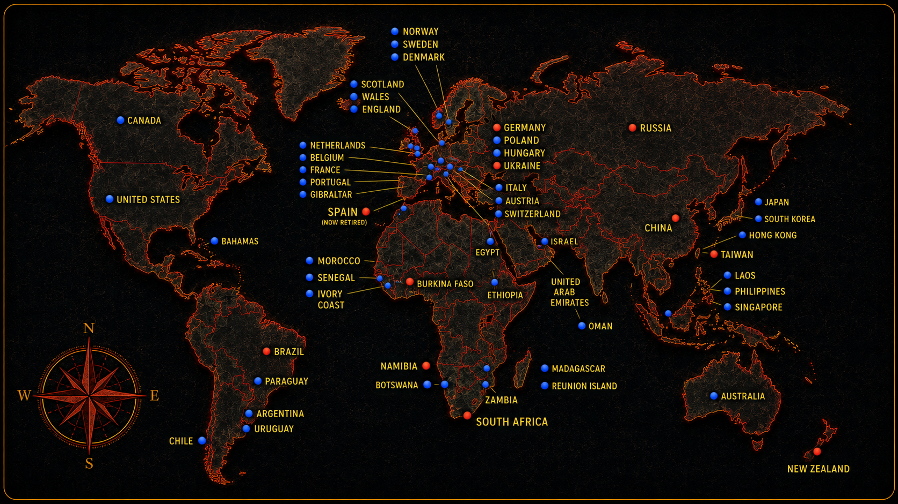

THE OPEN ROAD HAS NO BORDERS
From the places they have called home to the roads they have explored, every journey has added another chapter to the story.
EXPLORE THE ADVENTURES →A LIFETIME OF EXPLORATION
From places they have called home to unforgettable journeys on two wheels, every destination tells part of the Retired to Ride story.
A LIFETIME WITHOUT BORDERS
From the countries they have called home to the places where work, friendship and adventure have taken them, this map tells the story of a life lived without borders.

THE ROAD TAKES US EVERYWHERE ✦ OUR JOURNEYS. OUR STORIES. OUR WORLD.
New Zealand is where the Retired to Ride story began. A place of incredible landscapes, winding roads and the meeting that changed everything.
Today JR and The Honeybadger call Spain home. From here, the journey continues across Europe and beyond.
The road has already taken Retired to Ride through some incredible countries, including:
🇫🇷 France
🇩🇪 Germany
🇧🇪 Belgium
🇳🇱 Netherlands
🇩🇰 Denmark
🏴 England
And the journey is far from over...
Every new adventure adds another story. Every country adds another memory. Every ride creates another reason why the ride never gets old.
RETIRED TO RIDE ADVENTURES